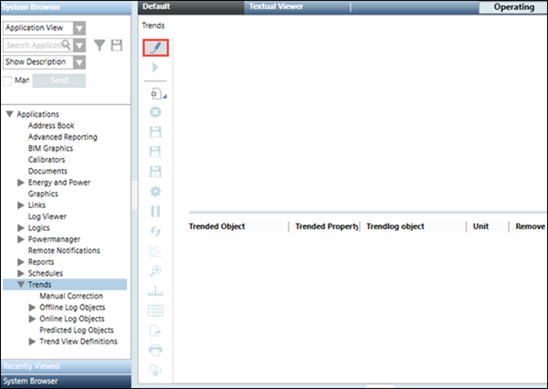
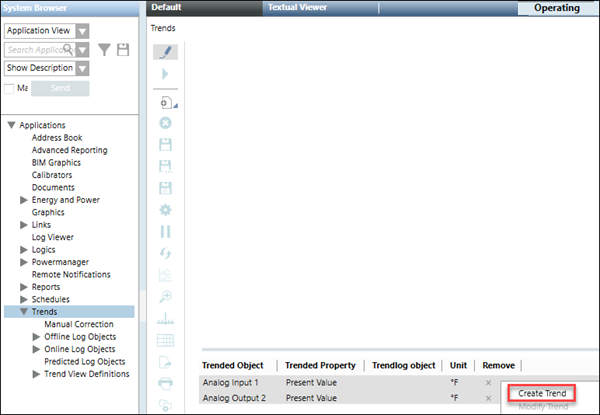

Create BACnet Offline Trend Objects
- You have configured rights on the BACnet configurator.
- BACnet points to be added to the trend log objects display in the Trend Viewer and the Trend Viewer is in Edit mode. For more information, see Add BACnet points to the Trend Viewer.
- In the System Browser, select Application View.
- Select Applications >Trends.
- The Trend application opens.
- Click Edit Trend
 .
. - The Trend application is switched to Edit mode.
- Add BACnet points to the Trend Viewer. For more information, see Add BACnet points to the Trend Viewer.

- Select one or more points in the legend for which you want to create trend log objects.
- Right-click and select Create Trend.

- The options to configure trend log objects display. For information on the displayed options, see Edit Mode.
- In the Properties expander, from the Device drop-down list, select the device on which the trend log object is to be created.
To create a trend log multiple object, select the Create Trendlog Multiple check box. - In the Trendlog Name expander, specify a unique name for the trend log object in the Name field.
- (Optional) For Append name with, select any one of the following:
- Select Configuration Attributes radio button, and thereafter select either Trended Object checkbox or Log Type/Interval checkbox or both.
- Select Unique ID radio button, and specify a value in the Starts With text box.
- Select None radio button, to specify only the name and name length of the trend log object.
- Select Limit Name Length checkbox, and specify the name length in the text box using the symbol.
NOTE: The default limit is 30, and the maximum limit is 500. Under score will be counted as a part of the name length. The value specified, is considered as the maximum length of the trend log object name. Append name with, and Limit Name Length setting is available only during new creation of trend log objects in bulk. - Expand the Logging Type expander and specify either of the following values for the Logging Type.
- Default from Device: The data entry is logged according to the default logging type of the device.
- Polled: The data entry is polled periodically.
- Triggered: The data entry is triggered when the trigger property is set to ON.
- COV: The data entry is captured when the value of the trended property changes.
- In the Log Interval expander, specify the time interval when the trend samples are to be collected.
- In the Buffer Size expander specify a size for the buffer in the Buffer Size field.
Select the Stop when full check box if you want to stop the collection of trend values in the buffer when the buffer reaches the specified value. - Expand the Start/Stop expander and specify the period for which you want to collect trend values by specifying the date and time values.
- Click Start Creation
 .
. - The results of the bulk operation display.
- Click OK.
- An offline Trendlog object is created in Applications > Trends > Offline Log Objects > [network type] > Hardware > [device].

NOTE:
For information on working with offline Trends in field panels, refer to the documentation of the relevant subsystems.